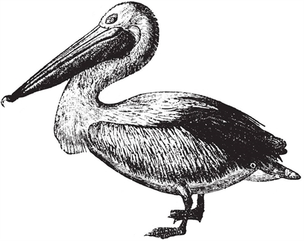

AUTHENTICITE
"L'authenticité, c'est d'être le même à travers toutes les situations, un projet unique." Jean-Paul SARTRE

Victor HUGO disait que le plus grand ennui, c'est d'exister sans vivre. Je ne vous apprends pas que notre épanouissement ne dépend pas d’une récession globale. Il est possible de renouer avec nos aspirations secrètes en se connectant à notre authenticité et d'adopter nos propres modèles afin de sortir d'une existence générique.
L’authenticité pourrait se traduire par le fait de penser et d’agir d’une façon qui soit fidèle à son ressenti intérieur. La recherche de l’authenticité est avant tout cette démarche qui consiste à se rencontrer soi. Néanmoins, aller à la rencontre de son "Soi" profond est rarement un chemin lisse et uniforme, il nécessite des prises de conscience, des adaptations, certains renoncements et surtout de l'engagement envers soi-même. On pourrait même considérer cette entité comme un besoin fondamental, une fidélité à soi-même et la capacité de façonner sa vie à partir d'une conaissance intrinsèque et profonde de soi.
la notion d’authenticité est étroitement liée à celle de congruence qui est un état dans lequel une personne se sent alignée, en cohérence complète avec toutes les parties de son être et qui exprime cet alignement dans ses agissements quotidiens.
Un regard psychanalytique peut étayer ce sujet au travers des travaux de Donald WINNICOT et son "faux self" ou encore Carl JUNG et son concept de Persona : "la Persona est ce que quelqu’un n’est pas en réalité, mais ce que lui même et les autres personnes pensent ce qu’il est" . Le mot Persona vient du latin, il désignait le masque que portaient les acteurs de théâtre. La Persona pour Jung n’a rien de réel, elle n’est qu’une interface entre l’individu et la société. Le moi conscient s’ identitifie aux diplômes, au rôle social, au titre honorifique à notre profession. La Persona est ce que l’on est dans le monde extérieur, une gentille fille, un gentil garçon bien élevé, célibataire, marié, pacsé, etc. Ce masque fait penser aux autres et à soi-même que notre être est individuel, mais il s’agit d’un simple artifice, un compromis. La souffrance mentale commence lorsque l’on s’identifie à sa persona. Lorsque l’on conserve ce masque en permanence dans le monde extérieur on devient qui l’on est, à savoir de préférence un masque socialement valorisant. Pensons à toutes ces personnes en souffrance, qui perdent leur emploi, font faillite. Ils perdent leur rôle dans le grand théâtre de la vie, représentation factice mais nécessaire dans le monde extérieur. Ils se retrouvent face à leur inconscient, à leur nature profonde, face à la véritable question mais qui je suis sans ce masque. Selon C.JUNG, notre moi en tant que porteur de ce masque ne doit pas oublier qu’il est simplement un petit enfant qui commence à peine à dire "je" .
Soi vrai ! Le terme self est la traduction anglaise du soi et est régulièrement usité en psychologie et en psychanalyse. On distingue le vrai self du faux. Le vrai self désigne l'image que le sujet se fait de lui-même et qui correspond effectivement à ce qu'il est et perçoit à travers une réaction adaptée. Le faux self désigne une instance qui s'est constituée pour s'adapter à une situation plus ou moins anormale et contraignante. L'image qui est alors en cause est défensive et fonction de réactions inadaptées de l'environnement et est surtout représentative d'un rôle qu'on lui aurait imposé. Pas de place à l'authentique ici!
L’authenticité pourrait se traduire par le fait de penser et d’agir d’une façon qui soit fidèle à son ressenti intérieur. La recherche de l’authenticité est avant tout cette démarche qui consiste à se rencontrer soi. Néanmoins, aller à la rencontre de son "Soi" profond est rarement un chemin lisse et uniforme, il nécessite des prises de conscience, des adaptations, certains renoncements et surtout de l'engagement envers soi-même. On pourrait même considérer cette entité comme un besoin fondamental, une fidélité à soi-même et la capacité de façonner sa vie à partir d'une conaissance intrinsèque et profonde de soi.
la notion d’authenticité est étroitement liée à celle de congruence qui est un état dans lequel une personne se sent alignée, en cohérence complète avec toutes les parties de son être et qui exprime cet alignement dans ses agissements quotidiens.
Un regard psychanalytique peut étayer ce sujet au travers des travaux de Donald WINNICOT et son "faux self" ou encore Carl JUNG et son concept de Persona : "la Persona est ce que quelqu’un n’est pas en réalité, mais ce que lui même et les autres personnes pensent ce qu’il est" . Le mot Persona vient du latin, il désignait le masque que portaient les acteurs de théâtre. La Persona pour Jung n’a rien de réel, elle n’est qu’une interface entre l’individu et la société. Le moi conscient s’ identitifie aux diplômes, au rôle social, au titre honorifique à notre profession. La Persona est ce que l’on est dans le monde extérieur, une gentille fille, un gentil garçon bien élevé, célibataire, marié, pacsé, etc. Ce masque fait penser aux autres et à soi-même que notre être est individuel, mais il s’agit d’un simple artifice, un compromis. La souffrance mentale commence lorsque l’on s’identifie à sa persona. Lorsque l’on conserve ce masque en permanence dans le monde extérieur on devient qui l’on est, à savoir de préférence un masque socialement valorisant. Pensons à toutes ces personnes en souffrance, qui perdent leur emploi, font faillite. Ils perdent leur rôle dans le grand théâtre de la vie, représentation factice mais nécessaire dans le monde extérieur. Ils se retrouvent face à leur inconscient, à leur nature profonde, face à la véritable question mais qui je suis sans ce masque. Selon C.JUNG, notre moi en tant que porteur de ce masque ne doit pas oublier qu’il est simplement un petit enfant qui commence à peine à dire "je" .
Soi vrai ! Le terme self est la traduction anglaise du soi et est régulièrement usité en psychologie et en psychanalyse. On distingue le vrai self du faux. Le vrai self désigne l'image que le sujet se fait de lui-même et qui correspond effectivement à ce qu'il est et perçoit à travers une réaction adaptée. Le faux self désigne une instance qui s'est constituée pour s'adapter à une situation plus ou moins anormale et contraignante. L'image qui est alors en cause est défensive et fonction de réactions inadaptées de l'environnement et est surtout représentative d'un rôle qu'on lui aurait imposé. Pas de place à l'authentique ici!
Nombreuses sont les barrières qui peuvent entraver un accès profond à soi même, au "Soi" authentifiable. En premier lieu, le rythme frénétique de la société contemporaine qui laisse peu de temps pour se retrouver avec soi. Elle en laisse également peu pour réfléchir, pour penser avec justesse. Ce sont pourtant des nécessités impérieuses pour tendre vers sa propre authenticité. De même, les sollicitations sociétales et sociales n’ont sans doute jamais autant favorisées l'éloignement de nos besoins profonds.
Alors, pour que l'accession à soi puisse effectivement prendre sens, il convient d’aménager son univers de vie. Cela peut passer par un certain nombre de choix et de règles à définir avec soi. Voici quelques pistes et idées qui abondent dans ce sens : limiter ses "consommations compensatrices" au quotidien (addictions, hyperactivités, réseaux sociaux, mobile, rencontres éphémères…) ; mettre en place des séquences de retrait, de calme, de tranquillité, de réflexion. En outre, pourquoi ne pas faire le tri, dans les relations humaines qui nous entourent, en se réservant plus de place et de disponibilité pour les personnes qui nous apportent et nous correspondent vraiment…
Puis cela passe par le fait de s'’accepter, s’aimer et s’assumer, avec responsabilité face à soi et aux autres. L’acceptation est la clé, impossible de s’assumer sans s’aimer et de s’aimer sans s’accepter. Être authentique se passe beaucoup plus dans le lâcher-prise et l’acceptation que dans l’action et l’agitation.
Être authentique, ce n’est pas seulement ne pas mentir, c’est aussi oser dire la vérité, sa vérité ressentie. Ce n’est pas seulement être franc envers les autres, c’est surtout, être vrai envers soi-même, sans faux-semblant. C'est se poser les questions que l'on ne veut pas se poser. C’est dire non, quand on n’en peut plus de dire oui. Ce n’est pas seulement oser s’affirmer une fois, c’est s’affirmer jusqu’à ce que l’autre ait compris.
C’est également accepter de vivre ses émotions quand elles surgissent et ne pas les retenir de peur de perdre la face. C’est questionner sa colère, sa tristesse lorsqu’il le faut, mais sans perdre le contrôle. C’est oser être singulier, différent des autres, dans ses opinions, ses goûts, ses valeurs. C'est surtout assumer son regard sur le monde.
Alors, imaginez faire un vrai mouvement vers votre authenticité, là où vous aviez l’habitude d’être assujettis. L'hypnose est la porte principale pour cette accession.
Alors, pour que l'accession à soi puisse effectivement prendre sens, il convient d’aménager son univers de vie. Cela peut passer par un certain nombre de choix et de règles à définir avec soi. Voici quelques pistes et idées qui abondent dans ce sens : limiter ses "consommations compensatrices" au quotidien (addictions, hyperactivités, réseaux sociaux, mobile, rencontres éphémères…) ; mettre en place des séquences de retrait, de calme, de tranquillité, de réflexion. En outre, pourquoi ne pas faire le tri, dans les relations humaines qui nous entourent, en se réservant plus de place et de disponibilité pour les personnes qui nous apportent et nous correspondent vraiment…
Puis cela passe par le fait de s'’accepter, s’aimer et s’assumer, avec responsabilité face à soi et aux autres. L’acceptation est la clé, impossible de s’assumer sans s’aimer et de s’aimer sans s’accepter. Être authentique se passe beaucoup plus dans le lâcher-prise et l’acceptation que dans l’action et l’agitation.
Être authentique, ce n’est pas seulement ne pas mentir, c’est aussi oser dire la vérité, sa vérité ressentie. Ce n’est pas seulement être franc envers les autres, c’est surtout, être vrai envers soi-même, sans faux-semblant. C'est se poser les questions que l'on ne veut pas se poser. C’est dire non, quand on n’en peut plus de dire oui. Ce n’est pas seulement oser s’affirmer une fois, c’est s’affirmer jusqu’à ce que l’autre ait compris.
C’est également accepter de vivre ses émotions quand elles surgissent et ne pas les retenir de peur de perdre la face. C’est questionner sa colère, sa tristesse lorsqu’il le faut, mais sans perdre le contrôle. C’est oser être singulier, différent des autres, dans ses opinions, ses goûts, ses valeurs. C'est surtout assumer son regard sur le monde.
Alors, imaginez faire un vrai mouvement vers votre authenticité, là où vous aviez l’habitude d’être assujettis. L'hypnose est la porte principale pour cette accession.
EN RELATION


SECRET
VALEUR
BESOINS (relationnels)
(famille)
MODELE
REPETITION
NARCISSE
LEGITIMITE
(NON) CHOIX